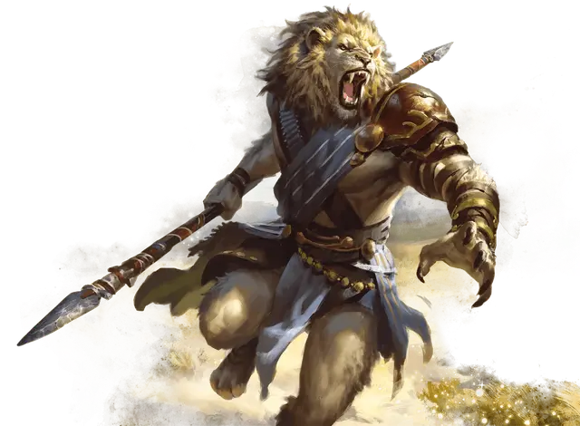

Леонин
Leonin

Леонины охраняют сияющие земли Орескоса, золотую равнину, куда даже боги редко вторгаются. Прайды этих кочевых, похожих на Львов гуманоидов редко взаимодействуют с другими народами, имея все необходимое на своей сияющей родине и зная о коварстве чужаков. Тем не менее, некоторые леонины задаются вопросом, что лежит за пограничными горами Орескоса, и стремятся проверить себя в большом мире.
Благородные и безжалостные
Леонины обычно несколько выше людей и двигаются с грацией, которую даруют им их физические тела. Рыжевато-коричневый мех покрывает тела леонинов, а у некоторых растут густые гривы разных оттенков-от золотистого до чёрного. Хоть их руки настолько же ловки, как и у других гуманоидов, леонины так же имеют выдвижные кошачьи когти, которые они могут мгновенно вытягивать. Это, наряду с их способностью издавать пронизывающий кости рев, дарует большинству леонинов вид, способный легко меняться от королевского к устрашающему.
Леонины часто действуют самоуверенно, иногда это можно принять за надменность. В то время как это может успокоить союзников, подобное поведение может вызывать неповиновение тем, кого леонин воспринимает как ложного авторитета или недостойного доверия эксперта.
Горячие головы
Представители других народов часто воспринимают леонинов как обидчивых, агрессивных и нетерпимых к критике созданий. Правда же заключается в том, что многие леонины просто наслаждаются сражением, будь то словесное или физическое. Они получают удовольствие от споров, борьбы, спаррингов и даже сражений, наслаждаясь возможностью тренировать свой ум и тело.
Из этого также следует, что леонины не склонны таить обиду. Воин может резко ответить на оскорбление, но когда бой окончен (и превосходство леонина доказано), оскорбление забывается — вместе с поверженным врагом.
Прайд и самодостаточность
Мало кто из леонинов посвящает себя служению богам. Много веков назад леонины поклонялись тем же богам, что и люди, но после того, как многие из их прайдов пострадали от рук тирана Агномаха, большинство леонинов отвергли богов. Дело не в том, что они отрицают существование божеств; они просто считают богов непостоянными и , как следствие, недостойными поклонения. Таблица «Леонин и боги» может дать представление о том, какие отношение у вашего леонина к богам.
Леонин полагается лишь на себя и свой прайд. Прайд связан воедино совместным прохождением всех жизненных испытаний и, в частности, священным актом охоты.
Леонин и боги
| к6 | Отношение |
| 1 | Меня забавляют выходки богов и их искренних, но в конечном счете обманутых смертных последователей, и я чувствую самодовольное превосходство в своей отрешенности. |
| 2 | Вмешательство богов в дела смертных пробуждают во мне гнев и злость. Я хочу, чтобы они просто оставили нас в покое! |
| 3 | Я рассматриваю богов как достойных противников-невероятно умных и хорошо подготовленных к продолжительному поединку, но в конечном счете обреченных на проигрыш. |
| 4 | Я уверен, что все плохое, происходящее в мире, в конечном счете можно свалить на богов, но я закатываю глаза при каждом новом повороте судьбы и пытаюсь жить дальше. |
| 5 | Я хотел бы быть таким же наивным, как люди и другие смертные, которые на самом деле думают, что «боги заботятся о них». Мне не хватает такой наивности. |
| 6 | Я не говорю об этом среди других леонинов, но в действительности, я почитаю богов и стараюсь угодить им своими действиями. |
Имена леонинов
Наряду со своими личными именами, леонины идентифицируют себя со своим прайдом. Например, член прайда кремневого когтя с личным именем Зиоре, скорее всего, будет называть себя Зиоре из кремневого Когтя
Женские имена: Алета, Атагона, Грагонда, Демна, Доксия, Зиора, Иадма, Койла, Орамна, Сеза, Эката, Эриз.
Мужские имена: Апто, Ат, Барагон, Брыг, Горий, Грекс, Земн, Зиор, Орий, Пиксатор, Тей, Эрем.
Названия прайдов: Златое поле, Железногривые, Кремневые когти, Роняющие звёзды, Солнечные проводники, Янтароглазые.
Особенности леонинов
Ваш персонаж-леонин обладает следующими особенностями.
Увеличение характеристик. Значение вашего Телосложения увеличивается на 2, а значение Силы на 1.
Скорость. Ваша базовая скорость ходьбы составляет 35 футов.
Возраст. Леонины взрослеют и стареют примерно с той же скоростью, что и люди.
Мировоззрение. Любое.
Размер. Леонины обычно имеют рост более 6 футов (1,8 метра), а некоторые из них даже выше 7 футов (2,1 метров). Ваш размер — Средний.
Вот как определить свой рост и вес случайным образом, начиная с выбора модификатора размера:
Модификатор размера = 2к10
Высота = 5 футов + 6 дюймов + модификатор вашего размера в дюймах
Вес в фунтах = 180 + (2к6 × ваш модификатор размера)
Тёмное зрение. На расстоянии в 60 футов вы при тусклом освещении можете видеть так, как будто это яркое освещение, и в темноте так, как будто это тусклое освещение. В темноте вы не можете различать цвета, только оттенки серого.
Когти. Ваши когти — это природное рукопашное оружие, которое вы можете использовать для совершения безоружных атак. Если вы атакуете ими, то наносите рубящий урон, равный 1к4 + ваш модификатор Силы, вместо дробящего урона, характерного для безоружного удара.
Инстинкты охотника. Вы получаете владение одним из следующих навыков по вашему выбору: Атлетика, Восприятие, Выживание или Запугивание.
Устрашающий рёв. Бонусным действием вы можете издать необычайно устрашающий рёв. Существа по вашему выбору в пределах 10 футов от вас, которые способны вас слышать, должны преуспеть в спасброске Мудрости, иначе будут испуганы вами до конца вашего следующего хода. Сл спасброска равна 8 + ваш бонус мастерства + ваш модификатор Телосложения.
После использования этой особенности вам необходимо закончить короткий или продолжительный отдых, прежде чем вы сможете использовать её ещё раз.
Языки. Вы можете говорить, читать и писать на Общем и языке Леонинов.